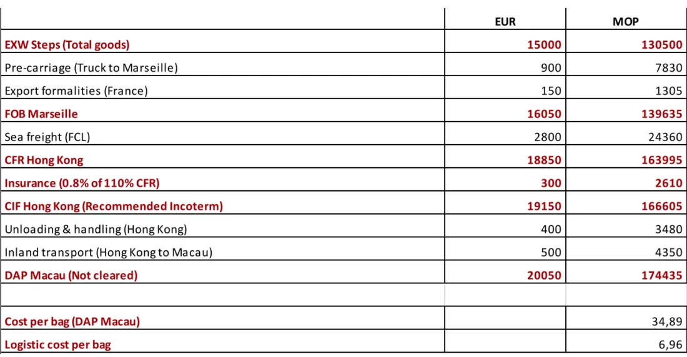

Licence · BUT GACO, parcours MCMO · 2023-2026
Licence GACO, parcours MCMO
Le BUT GACO, parcours MCMO, se prépare en trois ans et confère le grade de licence. J’ai suivi la première année à l’IUT de Reims-Châlons-Charleville, puis la deuxième et la troisième à l’IUT Nord Franche-Comté, la dernière en alternance au service achats de l’Hôpital Nord Franche-Comté.
- compétences
- 5
- apprentissages critiques
- 64
- projets
- 16
- stages et alternance
- 3
Les cinq compétences
Chacune a sa page, puis une page par niveau avec ses apprentissages critiques, ses traces et un bilan.
- Achats, vente et relation clientBC5 · Assurer le développement des affairesJusqu’au niveau 2
- Gestion de projetBC1 · Gérer un projetJusqu’au niveau 3
- Pilotage et performanceBC2 · Participer au pilotageJusqu’au niveau 3
- Marketing et internationalBC3 · Concevoir la démarche marketingJusqu’au niveau 3
- Omnicanal et digitalBC4 · Déployer le marketing omnicanal et digitalJusqu’au niveau 2
Trois années
- BUT 1IUT de Reims-Châlons-Charleville. Projet « Soutenons la Libye » et stage en ressources humaines chez CF2P.
- BUT 2, parcours MCMOIUT Nord Franche-Comté. Stage de deux mois au service achats de l’Hôpital Nord Franche-Comté.
- BUT 3 en alternanceService achats de l’Hôpital Nord Franche-Comté : deux consultations préparées jusqu’à leur publication.
Projets à la une
 Préparer le marché de refonte du site internet du GHT Nord Franche-ComtéBUT 3 · Individuel, en alternance
Préparer le marché de refonte du site internet du GHT Nord Franche-ComtéBUT 3 · Individuel, en alternance
Exporter des sacs en coton biologique vers MacaoBUT 3 · Seul, en anglais Prospecter 300 établissements publics pour un cabinet qualitéBUT 3 · À six
Prospecter 300 établissements publics pour un cabinet qualitéBUT 3 · À six « Soutenons la Libye », une collecte avec l’UNICEFBUT 1 · Équipe de cinq, chef de projet
« Soutenons la Libye », une collecte avec l’UNICEFBUT 1 · Équipe de cinq, chef de projet